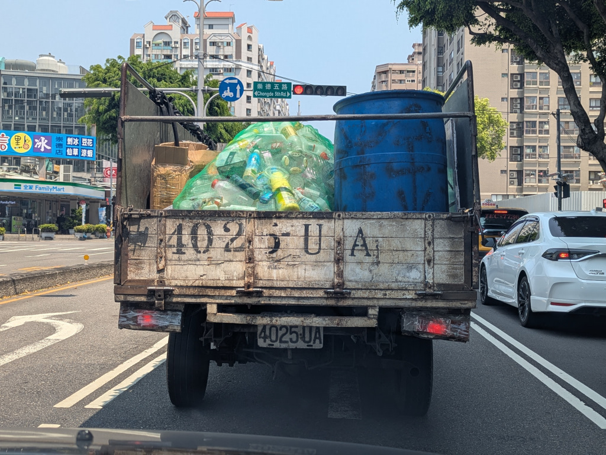
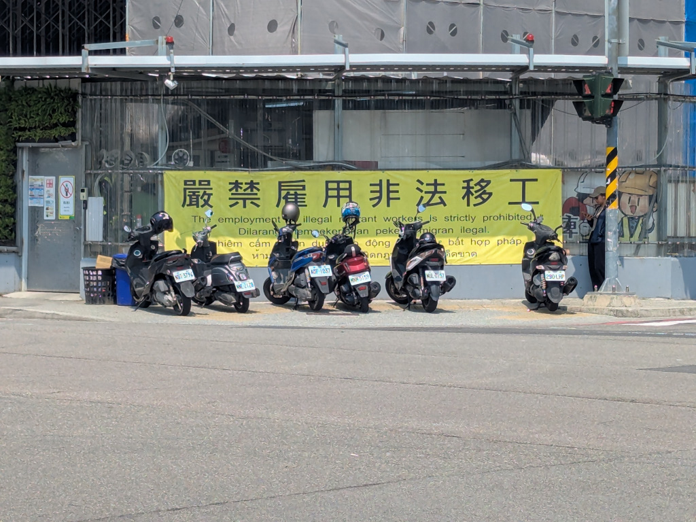
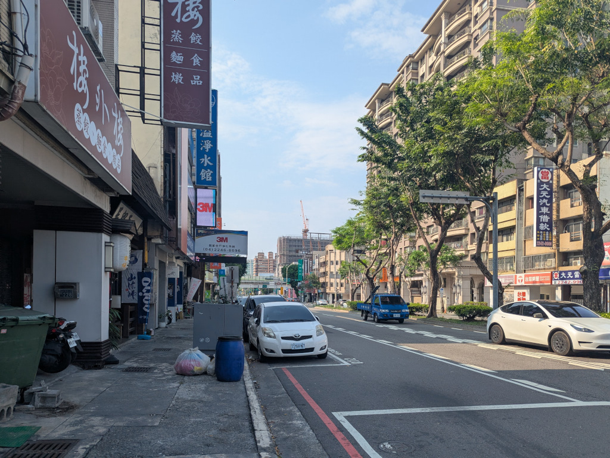
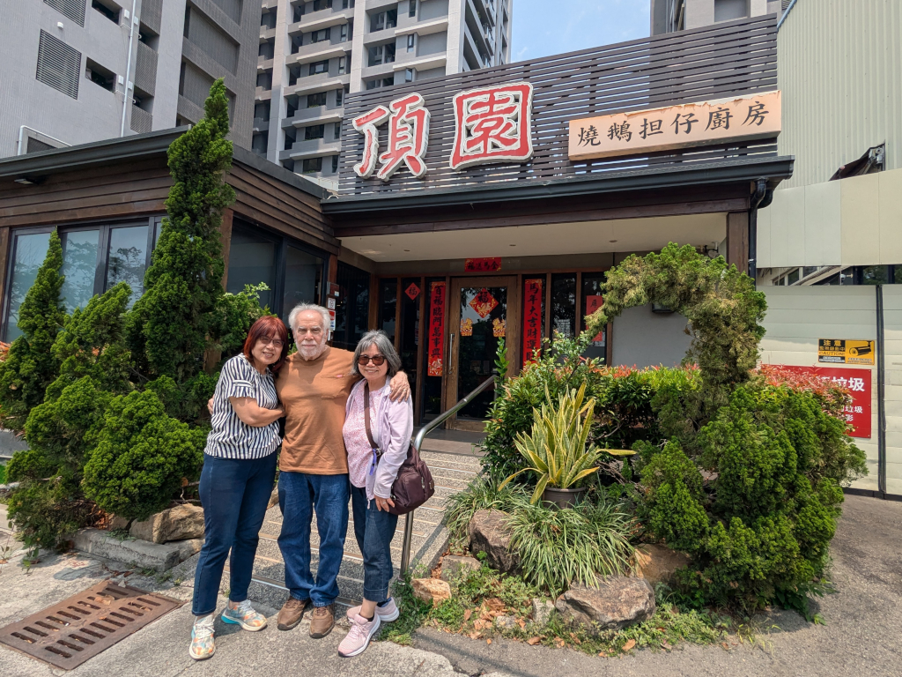
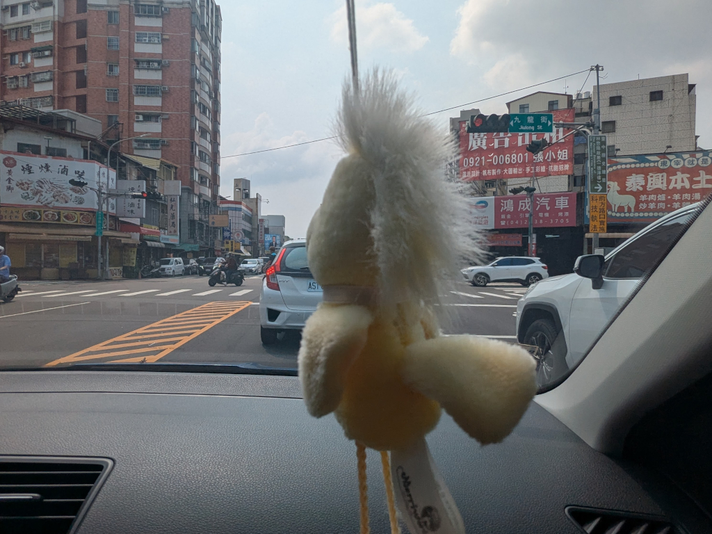
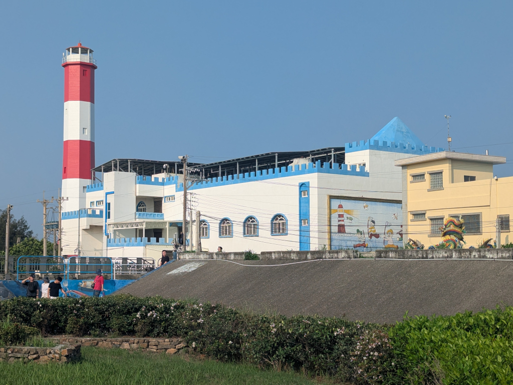
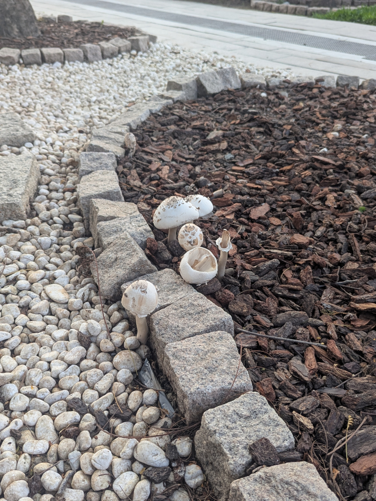
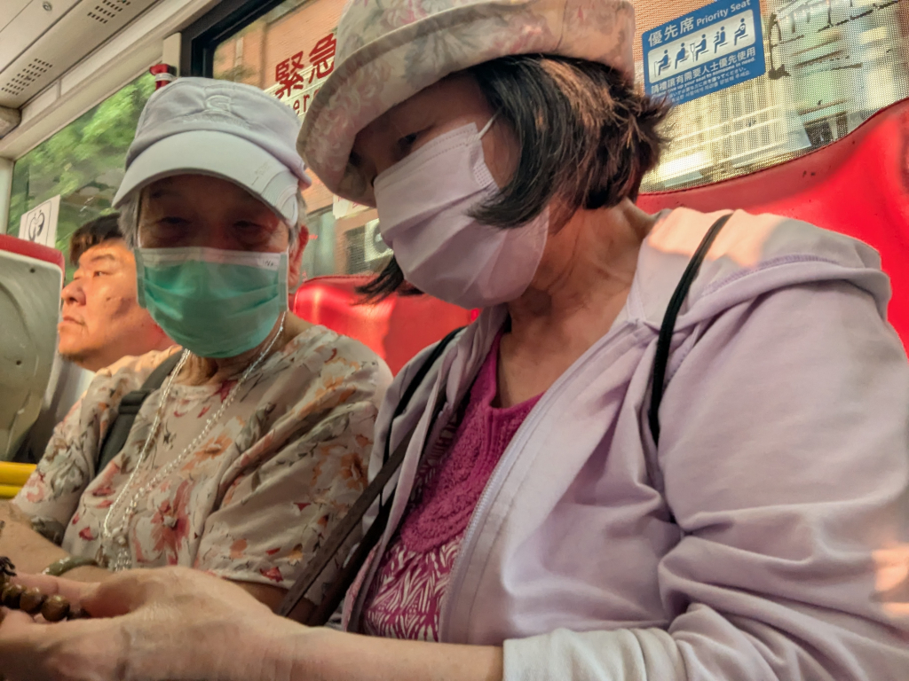

Miscellaneous Pictures
Main | Previous 1 2 3 4 5 6 7 8 Next

I took this sitting in the front passenger seat of Meihui's Skoda as we headed to the 稻鎮 經典台灣菜 Restaurant to eat lunch with her daughters and her son-in-law. I'm not sure why I took it, but I like it, so here it is. And this one too.{kind=link}

Spotted along the road. ("The employment of illegal migrant workers is prohibited.") Taiwan has problems with illegal migrant workers coming in from nearby countries, specifically the Philippines and Vietnam.
A street scene in front of the 樓外樓 Restaurant across the street from our hotel looking south down 崇德路.
At the 頂園 Restaurant, famous for its goose dishes ("Roasted Goose & Danzai Kitchen." Danzai (担仔) is a famous Taiwanese noodle dish from Tainan), where we went to eat with Mei-O's cousin Akui (阿魁).
Whenever we drove in Meihui's little Skoda, I always sat in the front passenger seat. She has this little birdie stuck on her windshield which hung right in front of my face! As the car turned and hit bumps, it would wiggle, driving me nuts!
This old lighthouse at the 高美溼地野生動物保護區 (Gaomei Wetland Preservation Area) is now a hotel. Visitors who want to catch a great sunset may decide to stay overnight and enjoy the beauty of the area. It has a light-fare oriented restaurant (rather than a full-service restaurant) serving light meals, desserts, coffee, and drinks.
Some mushrooms in the park around the old historic Japanese brewery in Taichung.
On the bus coming back from downtown Taichung one day, this elderly woman sitting next to Mei-O struck up a conversation with her. She wanted to give{kind=link}